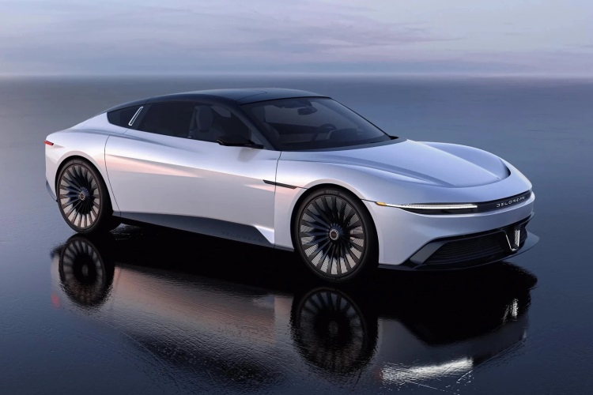
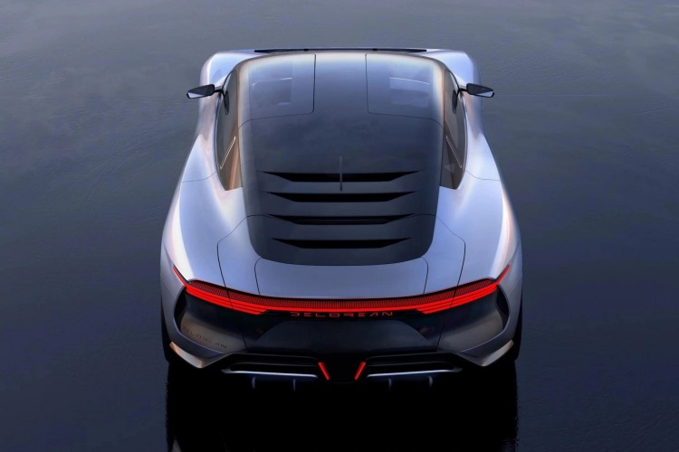
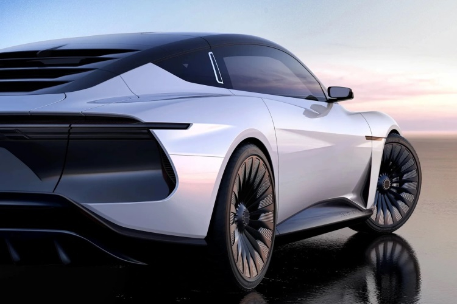
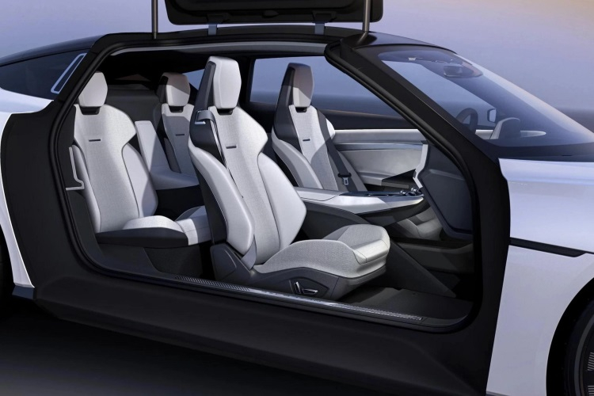

DeLorean Motor Company опубликовала первые изображения электромобиля Alpha5, который покажут широкой публике в середине августа. Дизайн новинки разрабатывался совместно с итальянской компанией Italdesign, которая создала облик оригинального DMC-12.
Дизайн Alpha5 отдаёт дань уважения оригинальному DeLorean с дверями «крыло чайки», многоспицевыми дисками и «жалюзи» на заднем стекле. Однако на этом сходства моделей заканчивается. Оригинальный DeLorean вышел в 1981 году и за всё время было выпущено около 9 тыс. автомобилей. Наибольшую популярность авто получило в 1985 году, когда на экраны кинотеатров вышла первая часть киноленты «Назад в будущее».
Любопытно, что основанная в 1995 году DeLorean Company не имеет никакого отношения к разработчику оригинального DeLorean, которого в 1975 году основал Джон Делореан (John DeLorean). В 1982 году компания обанкротилась и продолжительное время в основном занималась обслуживанием и реставрацией уже выпущенных авто. Сейчас во главе DeLorean Motor Company стоит Йост де Врис (Joost de Vries), ветеран индустрии электромобилей, успевший поработать в Tesla и Karma.
Оригинальный DeLorean был двухместным, тогда как Alpha5 может похвастаться четырьмя посадочными местами. Новинка также имеет низкую посадку, но облик авто лишён угловатых очертаний, которые были характерными особенностями DMC-12.
С точки зрения дизайна это правильное решение, поскольку внешний вид старого авто мало соответствует современной эстетике. Благодаря низкой посадке и обтекаемым формам коэффициент аэродинамического сопротивления новинки равен 0,23.
Что касается технических характеристик, то производитель предпочёл не вдаваться в подробности на данном этапе. Известно, что Alpha5:
Упомянутые характеристики относятся к базовой версии Alpha5. Вероятно, производитель намерен предложить варианты авто более высокой или низкой производительности. Стоимость Alpha5 не озвучена, но ожидается, что она будет находиться в районе $100 тыс.